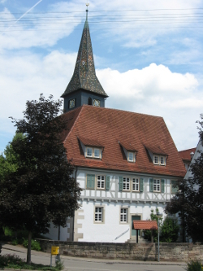

Steinenberg · Wieslauftal · Schwäbische Alb
Gemeinsam
auf dem Weg.
Der Schwäbische Albverein Ortsgruppe Steinenberg lädt ein zum Wandern, Naturerleben und Beisammensein. Rund 20 Touren im Jahr — für Familien, Senioren und alle Naturbegeisterten.
Aktuell
Nächste Veranstaltungen
Alle sind herzlich willkommen — Mitglieder und Gäste gleichermaßen.
-
05 Jul.Familienwanderung
Auf dem Weg zum Zaubersee
-
12 Jul.Gruppenwanderung
Rattenharz im Schurwald
-
26 Jul.Familienwanderung
Auf ins Wental
-
23 Aug.E-Bike Tour
6 Seen E-Biketour im Welzheimer Wald
Alle Touren sind offen für Gäste. Treffpunkt ist immer der genannte Parkplatz zur angegebenen Uhrzeit. Festes Schuhwerk empfohlen.
Was wir bieten
Für jeden das Richtige
Ob Familien, Senioren oder Technik-Begeisterte — im SAV OG Steinenberg ist für alle etwas dabei.
-
Wanderungen
Halbtages- und Tageswanderungen durch den Welzheimer Wald, die Schwäbische Alb und das Remstal — Natur pur vor der Haustür.
- ~18 Wanderungen/Jahr
- Verschiedene Schwierigkeitsgrade
- Offen für Gäste
-
Familienwanderungen
Erlebnistouren für die ganze Familie — mit spannenden Zielen wie dem Zaubersee oder dem Wental. Kinder herzlich willkommen!
- 6 Familientouren/Jahr
- Kindgerechte Strecken
- Erlebnisziele
-
Seniorengruppe
Gemütliche Ausflüge und Wanderungen speziell für Senioren — in angepasstem Tempo, mit schönen Zielen und netter Gesellschaft.
- 6 Seniorentouren/Jahr
- Gemütliches Tempo
- Gemeinschaft & Austausch
-
Neu
E-Bike Touren
Erlebt den Welzheimer Wald mit dem E-Bike! Die 6-Seen-Tour führt zu traumhaften Aussichtspunkten im Schurwald und Welzheimer Wald.
- Eigenes E-Bike erforderlich
- Wunderschöne Seenlandschaft
- Für alle Altersgruppen
Wer wir sind
Ortsgruppe Steinenberg
Wir sind die Ortsgruppe Steinenberg des Schwäbischen Albvereins — einer der ältesten und größten Wandervereine Deutschlands. Seit über 70 Jahren bringen wir die Menschen in Steinenberg und Umgebung raus in die Natur.
Unsere Heimat ist das malerische Wieslauftal zwischen Schorndorf und dem Welzheimer Wald. Direkt vor unserer Tür beginnen wunderschöne Wanderwege durch Wälder, Wiesen und das charakteristische Hügelland der Schwäbischen Alb.
Ob Familien mit Kindern, Senioren oder aktive Erwachsene — bei uns ist jeder willkommen. Mit rund 174 Mitgliedern und ~20 Veranstaltungen im Jahr bieten wir das ganze Jahr über Abwechslung und Gemeinschaft.

Unsere Region
Steinenberg liegt im Wieslauftal, mitten zwischen Schorndorf, dem Welzheimer Wald und dem Schurwald — ein Paradies für Wanderer.
Dabei sein
Mitglied werden
Als Mitglied des Schwäbischen Albvereins profitieren Sie von zahlreichen Vorteilen — und werden Teil einer aktiven Gemeinschaft mit 70-jähriger Geschichte.
- Alle Touren kostenlos mitmachen
- Vereinsversicherung bei Unfällen
- Mitgliedsausweis für SAV-Hütten & Rabatte
- Einladungen zu Jahresfesten & Ausflügen
- Aktuelle Infos über unseren WhatsApp-Kanal
174 Mitglieder
warten auf Sie
2026 begrüßten wir bereits 18 neue Mitglieder in unserer Gemeinschaft.
Ansprechpartner:
Michael Ehmann
07183 428556Ansprechpartner
Führungsteam
Unser ehrenamtliches Team kümmert sich um Wanderplanung, Wegpflege, Naturschutz und die Organisation aller Vereinsaktivitäten.
Wir freuen uns auf Sie
Kontakt & Anfahrt
SAV OG Steinenberg
Kirchplatz73635 Rudersberg (Steinenberg)
Baden-Württemberg
Übergeordneter Verein
Schwäbischer Albverein e.V.
Hospitalstraße 21b · 70174 Stuttgart
0711 / 225 85-0